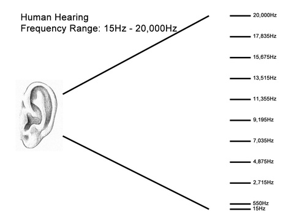

The Naked Ear
Tools and Techniques for Sound Art
Hello!
I'm Johann. Nice to meet you :)
And you are..?
** BONUS ** What is your favorite dessert?
Rules for Basic Human Decency

Borrowed from Jer Thorp's Data Art syllabus:
"I am 100% dedicated to a inclusive, harassment-free experience for everyone regardless of gender, race, sexual orientation, disability, appearance, or religion. I will not tolerate harassment of class participants in any form."
Why are we all here?
What will we be doing?
.. doing and exploring ..
.. talking and listening.
Workshop Overview
DAY 1
- An anecdotal survey of sound art
- Microphones
- Speakers
- Amplifier
DAY 2
- Circuit Boards
- Enclosuers
- Exploring
- Presentation
What is Sound Art?
Sculpture
Homage to New York, Jean Tinguely, 1960
Installation
Transfinite, Ryoji Ikeda, 2011
Environment
Times Square, Max Neuhaus, 1972-1992; reinstalled in 2002
Performance
Hair Hymn, APA (Xuan Ye), 2014-2015

Architecture
Forest Megaphones, Estonian Academy of Arts, 2015


Something in between
viewKoma, Tetsuya Umeda and Kanta Horio, 2006
Formal definition
Look in a book
What is sound?
Sound is Vibration
Sound is Vibration Perceived by Our Ears
Sound is Vibration Perceived by Our Ears Within a Certain Range
Why think about sound?
Sound is everywhere
John Cage's Silence
It affects our psychology
Noise Pollution
It affects our environment
From the NYTimes:
Human Noises in Ocean Held to Threaten Marine Mammals
Ocean Noise Could Threaten Whales
Whales, Somehow, Are Coping With Humans’ Din
R. Murray Schafer's The Tuning of the World
Why is sound important for artists?
Janet Cardiff
Creative Listening
Microphones
How does a microphone work?
Different kinds of microphones
David Dunn
Piezos!
Parts of the piezo microphone
Let's build one!
Speakers

Amplifiers
Let's build one!

Based on circit design by Eric Rosenthal presented in his Basic Analog Circuits class